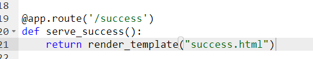

Route methods and form manipulation
Cool, but when we click the submit button, a 405 error comes up, this is because we don’t have any code to handle the “POST” request from the form, remember in the form section we have defined the method to be “POST”? Well, here it is. There are many different types of requests that a server can handle, such as GET, POST, UPDATE, DELETE, etc, for now we will focus on the POST request, which allows us to send data to the server for it to process.
Now, as we learned what the POST method is, we need to tell the flask app that the captureForm page has a POST method in it, to do this, we copy the route code and add “, methods=[“POST]”.
# ROUTE METHODS
@app.route('/captureForm', methods=['POST'])
Now, we can define the function that will run when the POST request is handled, let’s call it “serve_captureFormMethods():”.
def serve_captureFormMethods():
Within the method, we want to process the data from the form, to do this, we use another flask function “request” which we also need to import separately.
from flask import request #imports the request function from flask
Note that all imports should be together at the top of the file!
Now, in the server_captureFormMethods function, we can add the code to request the data from the form text boxes using the request function. Remember in the captureForm.html, we added the attributes to the <input> tags? Well, now take the value written after the “name=”, we will need it now.
In order to get the data from each of these text boxes, we use the corresponding input name= value:
userEmailData = request.form['userEmail']

Here, we defined the userEmailData variable which stores the data requested from the userEmail text field input name=”userEmail”.
To get the text in the upper case, we need to use the function “.upper” which is built into python and does not need to be imported separately:
userEmailData = request.form['userEmail']
userEmail = userEmailData.upper()
The reason why we are uppercasing the text, is to get rid of all the fluctuations in the letter size, it really does not matter for the email system, but it prevents the user from entering some crazy string of upper and lower case letters
The capitalised text will be stored in the userEmail variable. Now, do the same thing for the rest of the text fields, and at the end, you should have something like this:
#Get user Forename
userForenameData = request.form['userForename']
userForename = userForenameData.upper()
#Get user Surname
userSurnameData = request.form['userSurname']
userSurname = userSurnameData.upper()
Cool, now we have a way to capture the data from the text boxes, but, can we output it onto the page? Yes we can!
return "Email: " + userEmail + " Forename: " + userForename + "Surname: " + userSurname

Put this line at the bottom of the function, this will print all the captured data in the following format. Now reload the web app, go to the captureForm page, put in some data and click the submit button and see what happens.
Really nice, but, what if we serve an HTML page instead of text to show successful transmission of data onto the server? That would be awesome, let’s do that!
In the templates folder, create a new file called “success.html” and type the following code:
Now, go back to the flask_app.py and add a new route /success with a function “serve_success():” and add a return render_template(“success.html” code.
@app.route('/success')
def serve_success():
return render_template("success.html")

Now add some comments to both the previous code and to this.
@app.route('/captureForm') #Defines the captureForm route
def serve_captureForm(): #Function that will run at the /captureForm route
return render_template("captureForm.html") #Renders the captureForm.html file at the this route
@app.route('/success') #Defines the success route
def serve_success(): #Function that will run at the /success route
return render_template("success.html") #Renders the success.html file at this route
# ROUTE METHODS
@app.route('/captureForm', methods=['POST'])
def serve_captureFormMethods():
#Get user Email
userEmailData = request.form['userEmail'] #Gets the data from the userEmail input
userEmail = userEmailData.upper() #Takes the text out of it
#Get user Forename
userForenameData = request.form['userForename'] #Gets the data from the userForename input
userForename = userForenameData.upper() #Takes the text out of it
#Get user Surname
userSurnameData = request.form['userSurname'] #Gets the data from the userSurname input
userSurname = userSurnameData.upper() #Takes the text out of it
return "Email: " + userEmail + " Forename: " + userForename + "Surname: " + userSurname
Now, instead of the old return function at the bottom of the serve_captureFormMethods function, we are going to add something else. First, import the “redirect” and “url_for” functions from flask (also comment the code):
from flask import Flask #imports the Flask function from flask
from flask import render_template #imports the render_template function from Flask
from flask import request #imports the request function from flask
from flask import redirect #imports the redirect function from flask
from flask import url_for #imports the url_for function from flask
#On success
return redirect(url_for("serve_success"))
Then, change the return statement in the serve_captureFormMethods function, to the following:
The following code works similar to the tag in html, but in this case, it uses the redirect function along with a url_for(“server_success”) function as a parameter to launch the function that servers the success.html page. Now, reload the web app, and see what happens when you submit the form.
Lets now add a route and an HTML page for the “Emailing Page” button. Using the technique we learned, create a new HTML file “emailingPage.html” in the templates folder, create a new route called “/emailingPage” and add a function inside it called “serve_emailingPage():”.
Here is the markup for the emailing page. On the page, we have a form with a POST method, which asks the user to type in the email. The attribute value for name= is “email-parameter”, we will use this later in a python script which will use the data from the text field to send email to the typed email address. Now, go back and reload the flask app.
# ROUTES
@app.route('/') #Defines the route at the default route
def serve_indexPage(): #Function that will run at the default route
return render_template("index.html") #Renders an index.html file on the default route
@app.route('/captureForm') #Defines the captureForm route
def serve_captureForm(): #Function that will run at the /captureForm route
return render_template("captureForm.html") #Renders the captureForm.html file at the this route
@app.route('/success') #Defines the success route
def serve_success(): #Function that will run at the /success route
return render_template("success.html") #Renders the success.html file at this route
# ROUTE METHODS
@app.route('/captureForm', methods=['POST'])
def serve_captureFormMethods():
#Get user Email
userEmailData = request.form['userEmail'] #Gets the data from the userEmail input
userEmail = userEmailData.upper() #Takes the text out of it
#Get user Forename
userForenameData = request.form['userForename'] #Gets the data from the userForename input
userForename = userForenameData.upper() #Takes the text out of it
#Get user Surname
userSurnameData = request.form['userSurname'] #Gets the data from the userSurname input
userSurname = userSurnameData.upper() #Takes the text out of it
storeUserData(userEmail, userForename, userSurname) #store the data into JSON
#On success
return redirect(url_for("serve_success")) #Redirects the user to the success.html page on success